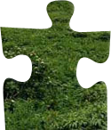
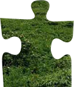

Nazar Streletskyi
Ознайомлення з css-правилом "position"
Це правило встановлює спосіб позиціювання відносно вікна браузера чи інших об'єктів на веб-сторінці. Положення елементу задається атрибутами left, right i bottom відносно краю вікна браузера.
Приклад блоку, в якому використовується значення absolute і relative властивості position:


 


Значення властивості position
Ця властивість може мати чотири значення: static, relative, absolute, fixed.
relative Положення елемента встановлюється відносно його батьківського положення. Додавання властивостей left, top, right i bottom змінює позицію елемента і зміщує його в ту чи іншу сторону від початкового положення.
static Елементи відображаються як звично. Використання властивостей left, top, right i bottom не призводить до змін.
inherit Наслідує значення батьківського елемента.